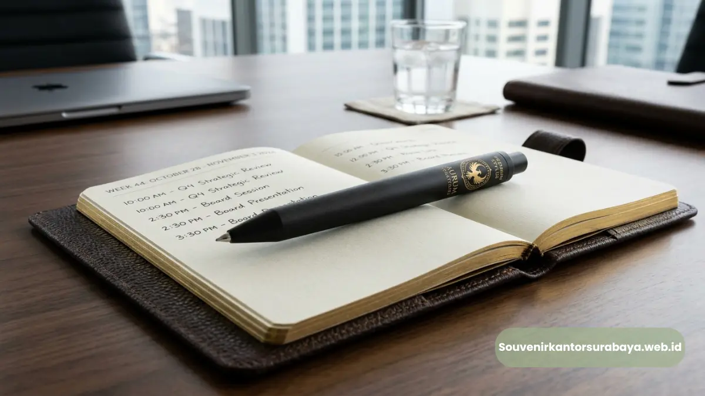

Pulpen metal stylus sebagai souvenir event korporat yang memperkuat retensi merek.
Manfaat pulpen metal stylus untuk souvenir event korporat terletak pada kesan premium yang dibawanya, fungsi ganda sebagai alat tulis dan stylus, serta daya tahan yang membuat logo perusahaan terus terlihat dalam jangka panjang. Souvenir ini membantu perusahaan membangun citra profesional di mata klien, mitra, dan karyawan. Semakin sering digunakan penerima, semakin besar pula nilai branding yang diperoleh perusahaan.
- Kesan premium pulpen metal stylus memperkuat citra profesional perusahaan.
- Fungsi ganda menulis dan stylus membuat produk relevan dengan kebiasaan kerja digital.
- Daya tahan material logam mendukung retensi merek dalam jangka panjang.
- Souvenir berkualitas tinggi meningkatkan persepsi positif tamu dan klien terhadap brand.
- souvenirkantorsurabaya.web.id menyediakan pulpen metal stylus custom logo untuk kebutuhan ini.
Apa Manfaat Utama Pulpen Metal Stylus sebagai Souvenir Event Korporat?
Manfaat utama pulpen metal stylus sebagai souvenir event korporat adalah kemampuannya memperkuat identitas brand melalui produk yang benar-benar terpakai, bukan sekadar dipajang lalu dilupakan. Berbeda dengan souvenir yang mudah rusak atau cepat kehilangan fungsi, pulpen metal stylus tetap dipakai dalam aktivitas sehari-hari penerimanya.
Manfaat ini semakin terasa karena stylus pada ujung pulpen relevan dengan kebiasaan kerja masa kini yang banyak melibatkan perangkat layar sentuh, baik saat rapat, presentasi, maupun aktivitas kerja mobile. Setiap kali digunakan, logo perusahaan yang terukir pada badan pulpen ikut terlihat oleh penerima maupun orang di sekitarnya.
Sebagai souvenir formal, pulpen metal stylus juga menonjolkan kesan bahwa perusahaan memperhatikan detail dan kualitas, sesuatu yang secara tidak langsung membangun kepercayaan klien maupun mitra bisnis terhadap reputasi perusahaan.
Mengapa Souvenir Premium Berpengaruh pada Citra Perusahaan?
Souvenir premium berpengaruh pada citra perusahaan karena kualitas barang yang dibagikan sering dianggap mencerminkan kualitas layanan atau produk perusahaan itu sendiri. Souvenir yang terkesan murahan berisiko menimbulkan persepsi yang sama terhadap bisnis yang membagikannya.
Beberapa alasan souvenir premium seperti pulpen metal stylus berdampak pada citra perusahaan:
- Material logam memberi kesan eksklusif yang berbeda dari souvenir plastik biasa.
- Detail finishing yang rapi menunjukkan standar kualitas perusahaan.
- Souvenir yang awet menghindarkan kesan bahwa perusahaan sekadar "asal memberi".
- Kesan pertama yang baik dari souvenir dapat memengaruhi keputusan bisnis lanjutan.
Baca Juga (Artikel Pilar)
Bagaimana Pulpen Metal Stylus Membantu Retensi Merek Jangka Panjang?

Retensi merek jangka panjang dihasilkan dari pemakaian berulang pulpen metal stylus berkualitas.
Pulpen metal stylus membantu retensi merek jangka panjang karena sifatnya yang tahan lama dan terus dipakai dalam berbagai aktivitas, sehingga logo perusahaan berulang kali terlihat tanpa perusahaan perlu mengeluarkan biaya iklan tambahan. Efek ini dikenal dalam industri promosi sebagai media branding dengan cost per impression yang rendah.
Beberapa faktor yang memperkuat retensi merek melalui pulpen metal stylus:
- Digunakan berulang dalam rapat, presentasi, maupun aktivitas kerja harian.
- Berpindah tangan antar kolega ketika dipinjamkan sementara.
- Tetap terlihat dalam jangka waktu lama karena material tidak mudah rusak.
- Logo yang diukir presisi tidak mudah pudar meski sering digunakan.
Semakin lama sebuah souvenir bertahan dan digunakan, semakin besar pula total paparan merek yang diterima perusahaan dari satu unit produk yang sama, menjadikan pulpen metal stylus investasi branding yang efisien untuk jangka panjang.
Bagaimana Memaksimalkan Manfaat Pulpen Metal Stylus di Event Korporat?
Manfaat pulpen metal stylus dapat dimaksimalkan dengan memastikan penerimanya tepat sasaran, seperti klien, mitra bisnis, atau peserta seminar tingkat manajerial yang benar-benar akan menggunakannya secara aktif. Penargetan penerima yang tepat membuat souvenir tidak berakhir sia-sia.
Selain itu, momen pemberian souvenir juga berpengaruh terhadap kesan yang tertanam di benak penerima. Pulpen metal stylus yang dibagikan di awal acara, misalnya saat registrasi seminar, cenderung digunakan sepanjang acara berlangsung sehingga paparan logo perusahaan berlangsung lebih lama dibanding dibagikan di akhir acara.
Kombinasi desain custom logo yang jelas terbaca dengan kualitas material yang terjaga menjadi kunci agar manfaat branding dari pulpen metal stylus benar-benar tercapai secara maksimal.

Hawa Nadira
Tim penulis CorporateGifts ID berfokus pada strategi souvenir kantor, merchandise korporat, dan inovasi brand untuk klien B2B.
Keahlian: Branding perusahaan, produksi souvenir, paket event, desain materi promosi.
Artikel Terkait

Vendor Pulpen Metal Stylus Event Bisnis Surabaya
Vendor pulpen metal stylus event bisnis Surabaya menyediakan alat tulis premium berbahan logam dengan ujung stylus untuk layar sentuh.
Baca Selengkapnya
Pulpen Parker Ukir Nama Perusahaan Surabaya
Pulpen Parker ukir nama perusahaan Surabaya: souvenir korporat eksklusif yang memadukan prestise merek global dengan identitas brand.
Baca Selengkapnya
Paket Seminar Kit Lengkap untuk Kantor di Surabaya
Paket seminar kit kantor Surabaya adalah satu paket perlengkapan acara yang biasanya terdiri dari lanyard, id card, notebook, dan pulpen.
Baca Selengkapnya